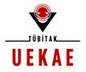
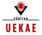

|
Yeni Yıl Armağanınız:
Tüm Pardus kullanıcılarına mutlu yıllar diliyor, işbirliği yapan sektör dergilerine teşekkür ediyoruz... |
Pardus Haberleri

Pardus Şehrinizde
|
|
Yeni Yıl Armağanınız:
Tüm Pardus kullanıcılarına mutlu yıllar diliyor, işbirliği yapan sektör dergilerine teşekkür ediyoruz... |
Pardus Haberleri
Pardus Şehrinizde
|
Bu web sitesinde bulunan bilgi ve belgelerin, kaynak gösterilmek koşulu ile kullanılması serbesttir.
Pardus markası ve logotipi TÜBİTAK'ın tescilli markasıdır. Kullanım koşulları için Yasal Uyarı bölümünü inceleyiniz.
Bilgi ve önerileriniz için bilgi at pardus.org.tr
TÜBİTAK - UEKAE, PK.74 41470, Gebze / Kocaeli.